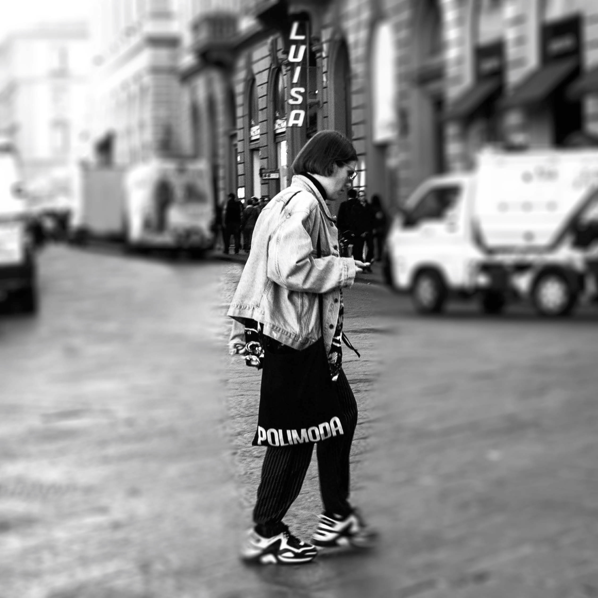
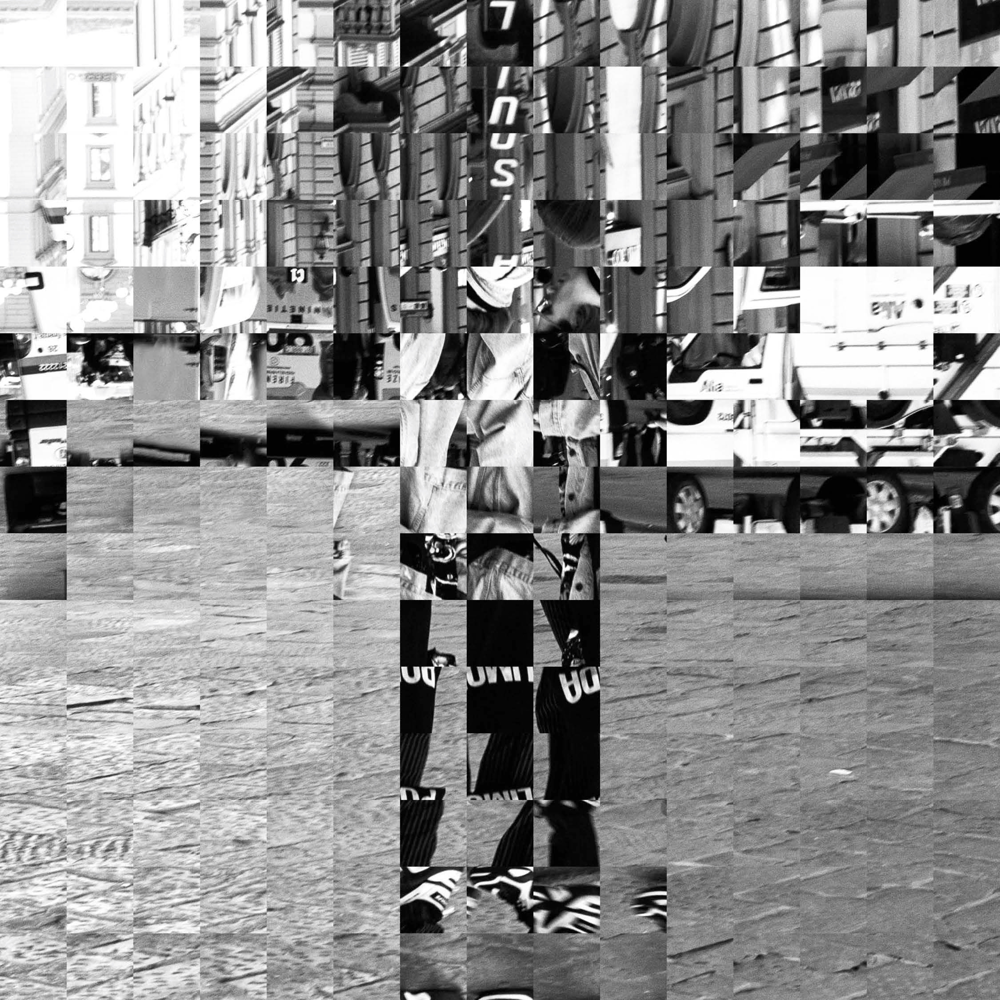
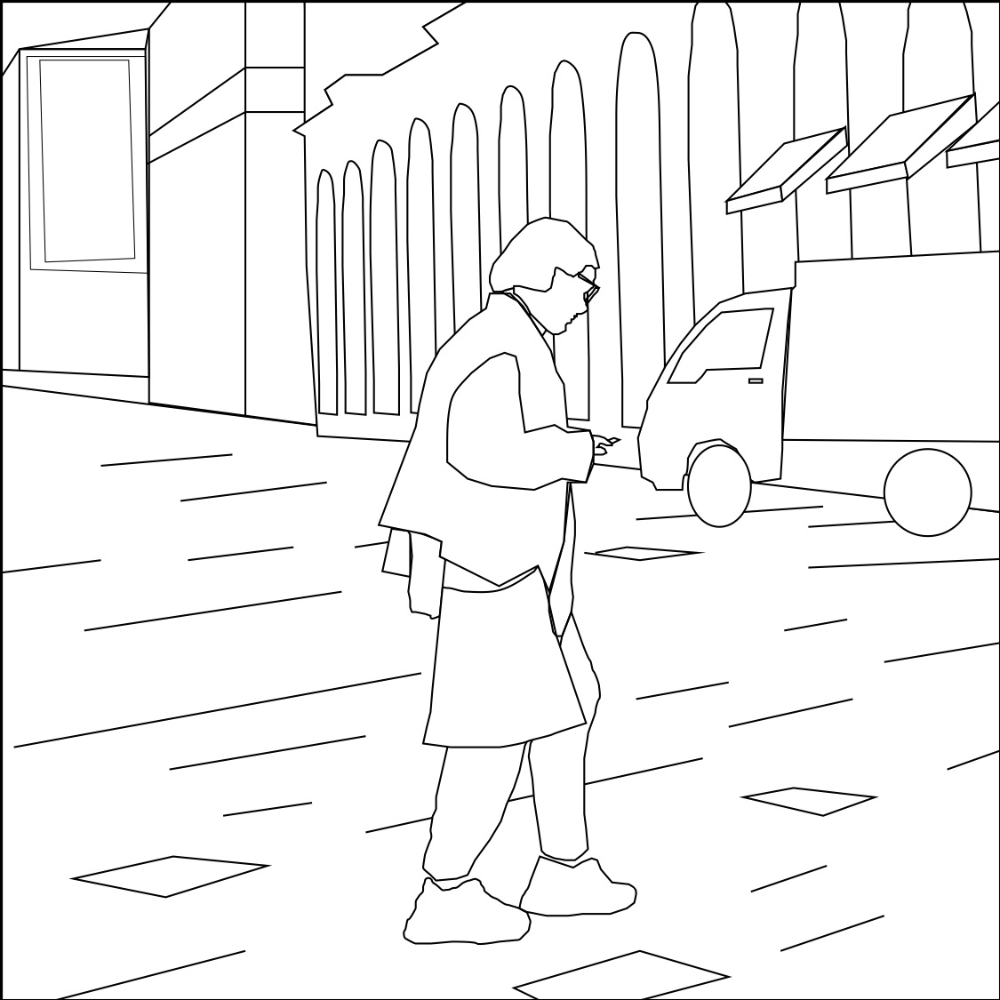
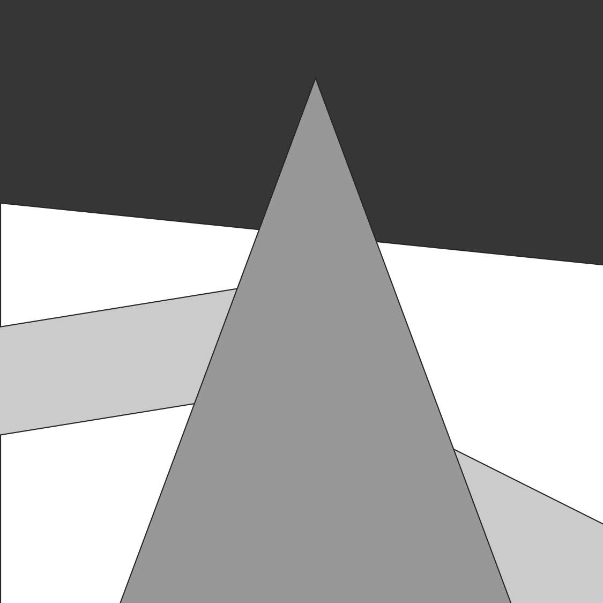
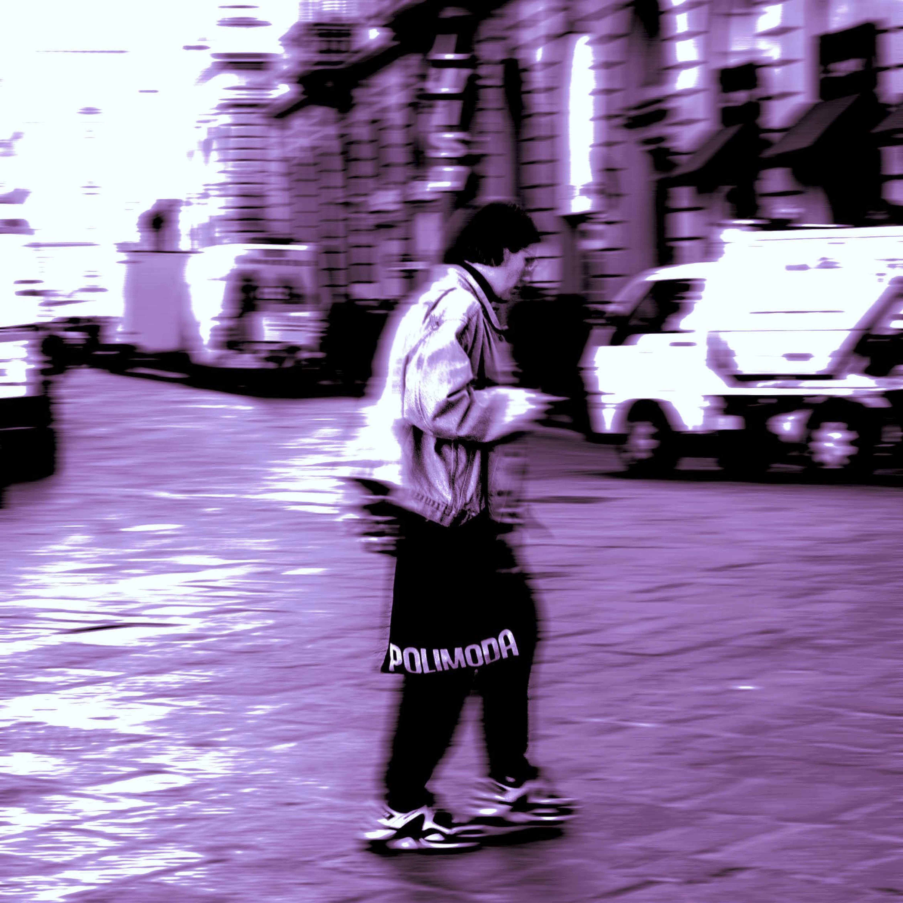
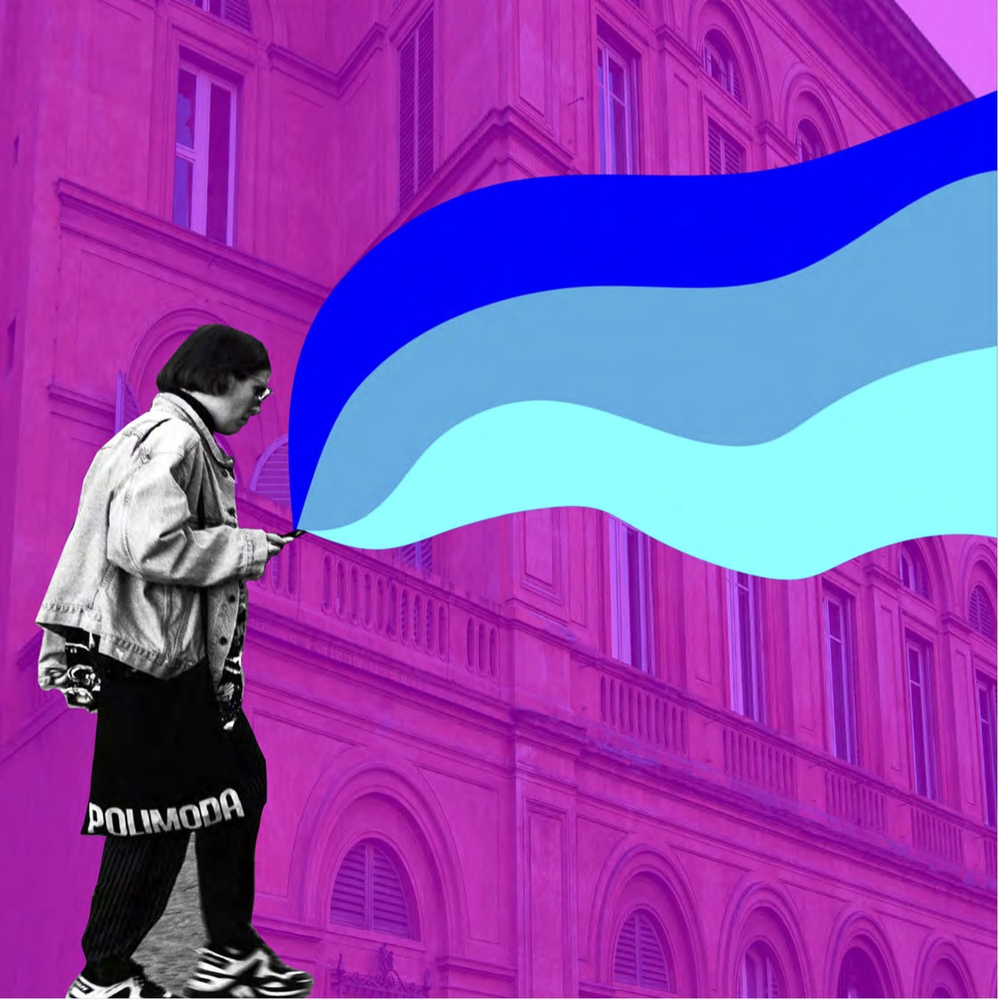

Image Manipulation Project
For this project in Introductory Graphic Design, I used Adobe Illustrator and Photoshop to manipulate an image representationally, abstractly, and symbolically. This is an original photo that I took in Florence, Italy. I was inspired by the funky style of this Florentine and found her to be a great subject for this assignment. I enjoyed breaking the image down into simple two-dimensional illustrations and building them back up.











